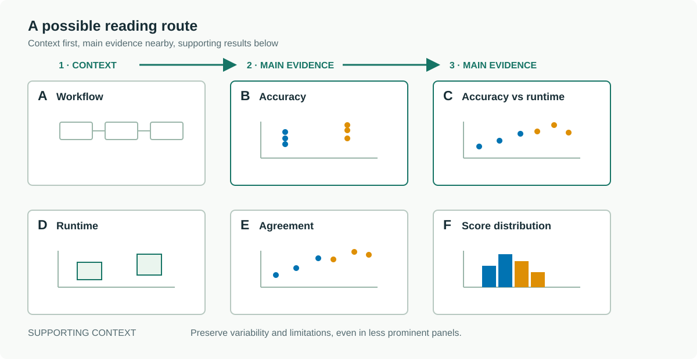

This six-panel storyboard introduces the inputs, quality checks, parallel methods and evaluation before showing accuracy, runtime, agreement and score distributions. Download methods-benchmark.csv. It contains fictional results for two methods on eight matched datasets; each row is one method–dataset run. These values are illustrative, not validation of a real method.
Illustrative figure using ktfigure's plot renderer and vector-drawn concepts, with a shared key outside the panels. Synthetic benchmark data only.
AAnalysis workflowMatched data → QC → methods → comparison
BAccuracyIndividual benchmark runs
CTrade-offRuntime vs accuracy
DRuntimeVariability by method
EAgreementAccuracy vs agreement
FScore distributionOverlapping ranges
A–C occupy the first row and D–F the second. The compact pipeline has its own cell; B and C put the main benchmark comparisons near the top.
Panel A / Concept figure
Draw a branching analysis pipeline.
The step illustrations are schematics, not screenshots of the interface.
Stack Rectangle boxes for “Matched datasets” and “QC + processing”. Below them, put “Method A” and “Method B” side by side, followed by a shared “Score and compare” box. Define the metrics in the figure legend.
Use Line segments to connect boxes. Draw the shared input path first, branch into the method lanes, then bring the scored results together. Route connectors through the gaps between boxes; do not run lines beneath text or through box interiors.
Place short Text labels centered inside each box. Keep box sizes, padding and border widths consistent. Label arrows only if the words fit clearly in open space and describe the actual workflow.
Match the actual method: show split, preprocessing, exclusion or validation steps only when they were performed, and put them in the correct order. Text annotations and line arrowheads are included in PNG, PDF and SVG exports; inspect the exported file to verify they remain legible and correctly placed.
Panels B–F / Benchmark evidence
Show the trade-offs, not just a winner.
Load methods-benchmark.csv for each plot and leave unspecified mappings at (none). In Properties, use the same group colours and typography across panels. The illustration uses one shared method key above the panels rather than legends over the points; turn off individual legends in Grid & Legend and add the shared key in a vector editor after export.
The thumbnails below show plot types schematically; they are not the synthetic benchmark data.
Panel / question
Plot and mappings
Why this view?
B · How accurate?
strip; X method, Y accuracy. Label Y: Accuracy (fraction).
Shows individual runs rather than only an average.
C · What is the trade-off?
scatter; X runtime_min, Y accuracy, Hue method. Label axes with units.
Shows speed and accuracy together, including overlap between methods.
D · How variable is runtime?
box; X method, Y runtime_min. Label Y: Runtime (min).
Summarizes spread; with eight runs per method, also consider showing every point.
E · Do metrics agree?
scatter; X agreement, Y accuracy, Hue method. Label axes as fractions.
Checks whether distinct metrics tell a consistent story; association does not establish equivalence.
F · How are scores distributed?
histogram; X accuracy, Hue method. Label X: Accuracy (fraction).
Shows score ranges; bin choice matters, especially with few runs.
The plots do not connect matched pairs. For paired comparisons, calculate per-dataset differences with an appropriate analysis outside ktfigure and state how pairing was handled. Define metrics, data splits, hardware and runtime measurement in the legend; do not claim general performance from this toy benchmark.
Layout lesson / Prime real estate
Put the main evidence where it is found first.
Readers often start near the upper left and scan across, although reading order and journal layouts vary. Use that prominent area for the context and evidence needed to understand the message—not merely the most striking result.

One possible reading route: the workflow provides context, the first row presents the central comparison, and the second row adds supporting evidence. The highlighted area is a design choice, not a rule or a claim about the data.
Write the takeaway. Decide what the comparison is intended to show, such as the accuracy–runtime trade-off. Keep the claim proportional to the data, not stronger than the benchmark supports.
Give the story a route. Here A provides the compact workflow, while B and C put individual accuracy and the trade-off beside it in the first row. D–F add supporting context. If your main result needs more room, enlarge it and rearrange supporting panels rather than shrinking its labels.
Build the grid. Draw the plot regions, then Shift-click objects in Select mode and use Align and Distribute to line up rows and columns. Keep adequate gaps for axes and place the method key outside the data area. After PDF/SVG export, add the panel letters, shared key and concept labels in a vector editor.
Check the hierarchy honestly. View the figure at final size and follow A–F without reading the caption. Can a reader find the main comparison and still see variability, overlap and limitations? Do not use colour, cropping or axis scales to exaggerate the result.